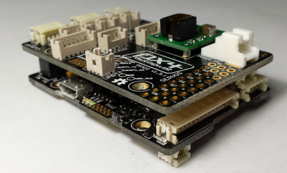
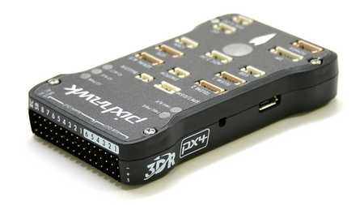
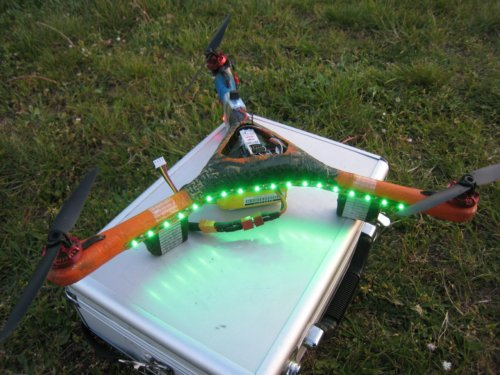
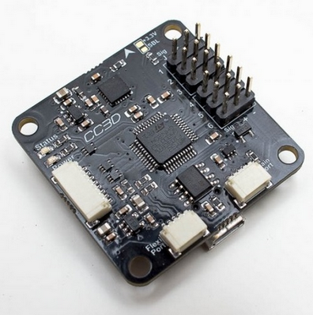

開源四軸飛行器
APM & 3D Robotics
3D Robotics公司旗下的飛控有3款，分別是ArduPilot（簡稱APM），PX4和Pihawk。
APM是比較古老的版本，處理核心使用的是Arduino，16位mega系列單片機，開發環境為arduino-IDE，基於Arduino這點和MWC飛控是一樣的。功能上依然很強大，地面站使用apm-planner和mission-planner。最新版本為APM 2.6，開源。
PX4是apm的升級版，使用了很流行的stm32f407單片機，處理速度上了一個大臺階，擺脫了arduino的瓶頸，走向了發燒級的道路。不過PX4實際上是由兩部分組成的，PX4FMU和PX4IO板。

後來又推出了Pixhawk飛控，其實就是把PX4FMU和PX4IO板結合在了一起，更高的集成度。

其背後的商業公司是3D Robotics。3D Robotics創始人是克里斯·安德森（Chris Anderson），前《連線》主編，著有《長尾理論》，《創客：新工業革命》等暢銷書。創客運動的積極倡導者和領袖級人物。有關克里斯·安德森和他的無人機，可以參看《開源雜誌》上的報道《變革推動者.克里斯安德森的無人機夢想騰飛》.
圍繞著3DR公司的產品，形成了一個活躍的無人機愛好者社區，無人機飛控功能很強大，能飛固定翼、旋翼、直升機等。旗下網站也有好幾個ardupilot.com、diydrones.com、3drobotics.com，很是混雜，很多資料和文檔看的眼花繚亂。
據業內人士透露，diydrones是現在最活躍的四軸飛行器，無人機論壇，日活躍用戶有2萬多（2014-6，這個數據是否真實沒有驗證過）。所以把這個放在第一位介紹給大家。
- 3DR官網： http://3drobotics.com/。這個網站簡單來說就是3dr賣飛控的官方旗艦店，我還以為開發者的一些東西也在上面，，好浪費感情。
- apm飛控的官網：http://copter.ardupilot.com 。見名知意，基於arduino的飛控，肯定是apm的官網了，一些開發者資料在http://dev.ardupilot.com。
- pixhawk飛控的官網：https://pixhawk.org 。 PIX4和Pixhawk的資料都在上面，此外上述代碼都託管在GitHub上。
- diydones論壇：http://diydrones.com 。這個是3dr旗下的交流論壇，你可以在這裡找到很多國外的飛控愛好者。
本節內容部分來自Wellmakers博客3D Robotics相關介紹。
MikroKopter
在2006年10月24號，Holger Buss和Ingo Busker創造了MK，一個偉大的Mikrokopter四軸社區。 在2007年中，Mikrokopter便像一個“ 空中的釘子”，像一隻鳥一樣，穩步的停留在空中。這對於開源四軸飛行器是一個很大的里程碑。
MikroKopter來自德國。毫無疑問，MikroKopter這個名字來源於德語，對應的英文應該是MicroCopter。其英文官網地址是http://www.mikrokopter.de/en/home。
作者在SVN上共享了代碼。
KK飛控
最經典的多軸飛控，價格十分便宜，很多人就是用它學會飛四軸的。主要問題是沒有自穩，更不用說什麼定高、GPS之類的高級功能了。因為沒有自穩，新手練習起來就比較困難，不過對於從直升機轉過來的玩家來說就是小case了。支持3軸、四軸、6軸、V22的飛行模式；
erlerobot
這是一個使用Linux系統的開源四軸飛行器項目。他們的口號是：Building the next generation of educational drones。
有比較齊全的wiki，並且使用gitbook形式提供四軸飛行器開發的電子書。
https://github.com/erlerobot/wiki/wiki
http://erlerobot.github.io/erle_gitbook/en/
MWC飛控（基於Arduino硬件平臺的飛控）
MWC是MultWii Copter的縮寫，是開源的多軸飛行器固件。此固件的原創作者是來自法國的Alex，他為了打造自己的Y3飛行器（一個三軸飛行器）而開發了最初的MWC固件。幾年來經過許多高手的參與及共同努力，開發進度越來越快，已經基本成熟，支持三軸，四軸，六軸等多種飛行器。其最大的特點是，其硬件是基於Arduino平臺。這為很多熟悉開源硬件Arduino的人入門提供方便。
下圖為Alex最早使用MWC的Y3飛行器。

MWC飛控通常有兩種版本（使用的單片機不一樣），都是基於開源的Arduino平臺。
- Atmega328P 版本
- Atmega2560 版本
所以我們可以使用Arduino Pro Mini/Arduino Mega等開發板搭建自己的四軸飛行器。當然，需要有數字電路和編程的底子，不過如果悟性好，看看文檔也能搞起來。主要難點在於調試，很難把它調得很穩，需要很大的耐心。
Paparazzi

這是國外一個開源的固定翼，多軸飛行器項目。一個做固定翼的朋友購買了它的組件。github上的資料，wiki等都挺全面的。項目不僅僅只包括飛控板的軟硬件，包括從穩壓電源和GPS到卡爾曼濾波代碼, 而是一個強大和不斷擴大的地面空中軟硬件群，包括數傳電臺，天線和一個高度進化的用戶友好的地面控制軟件界面。
http://wiki.paparazziuav.org/wiki/Main_Page
OpenPilot
和大多數飛控功能差不多，自穩，定高（有高度計的），等功能，這個項目還在持續開發中，目前四軸飛行器用cc3d版本飛控的人也很多。

open drone（國內）
open drone是由北京的LUG和創客組建的一個項目。但是沒有看到其產品。很可能還是一個比較鬆散的組織，沒有以公司盈利的團隊形式存在。